Warmobile: a low-poly armoured vehicle from one box
A game-ready model of a Tumbler-style armoured car, built from a set of orthographic drawings. The hull, the front fender arms, all six tires, the spoiler fins and the jet nozzle are pulled out of one single box, so the finished vehicle is one closed, watertight mesh.

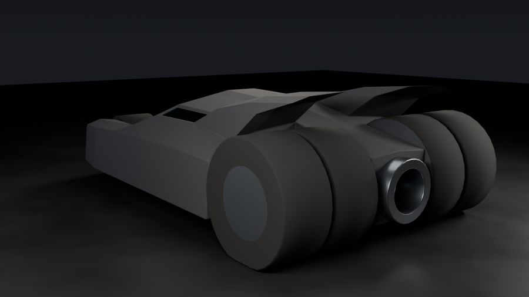
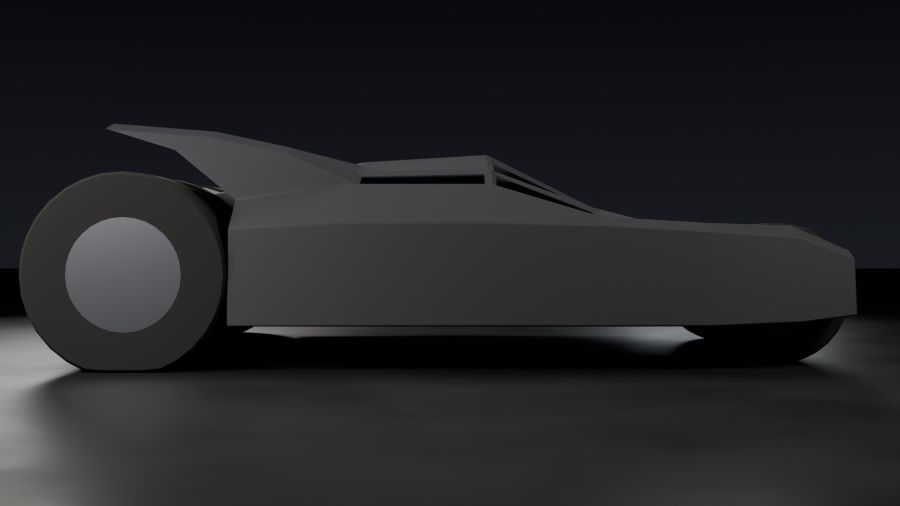
What's different about this project
The first three projects used many separate objects. This one follows the rules a game artist works under. It starts the way hard-surface game assets usually start: with orthographic drawings that fix every size before any modelling begins. The brief that came with the drawings set these constraints:
| Rule | Why game artists care |
|---|---|
| Start from one box and only extrude, cut and move | This is box modelling, the classic way to build hard-surface models. Every part grows out of the same mesh, so nothing floats or overlaps. |
| Manifold: every edge shared by exactly two faces | A watertight mesh casts clean shadows, works with physics and collision, and can be 3D printed or baked. |
| One island: everything connected | One object to export, one draw call in the engine, and no hidden gaps between parts. |
| 250–500 faces for the base model | A "Tier 2" low-poly budget: enough detail to read from a game camera, cheap enough to draw many times. Step 12 then makes a higher-detail version for close-ups and keeps this one as a backup, the way games keep several levels of detail of one asset. |
| Flat armour facets, no Subdivision | The faceted look is the style. Every armour face is meant to be seen. Only the round parts (tires, nozzle) and the thin bevel strips get smooth shading. |
| Symmetric, but no Mirror modifier | The centre-line details (nose ridge, roof spine, nozzle) stay one continuous piece instead of two halves. |
Step 1 · Read the drawings and load them as references
Before a single face exists, the vehicle is fixed on paper. The five drawings in projects/04-warmobile/assets/reference are orthographic elevations: there is no perspective, so parallel edges stay parallel and a length measured anywhere on a sheet is a true length. Every sheet carries a 1-ft grid (12" by 12") that starts exactly at the vehicle's ends and at the ground line, and all five share one scale: the sheets are 2400 px wide and show 18 ft, so 1 ft = 133⅓ px.
The drawings show the finished vehicle, with round tires, a round turbine nozzle and slate-tinted glass. The first eleven steps build it as a low-poly model that approximates the round parts with eight sides; Step 12 then rounds them to match the drawings.
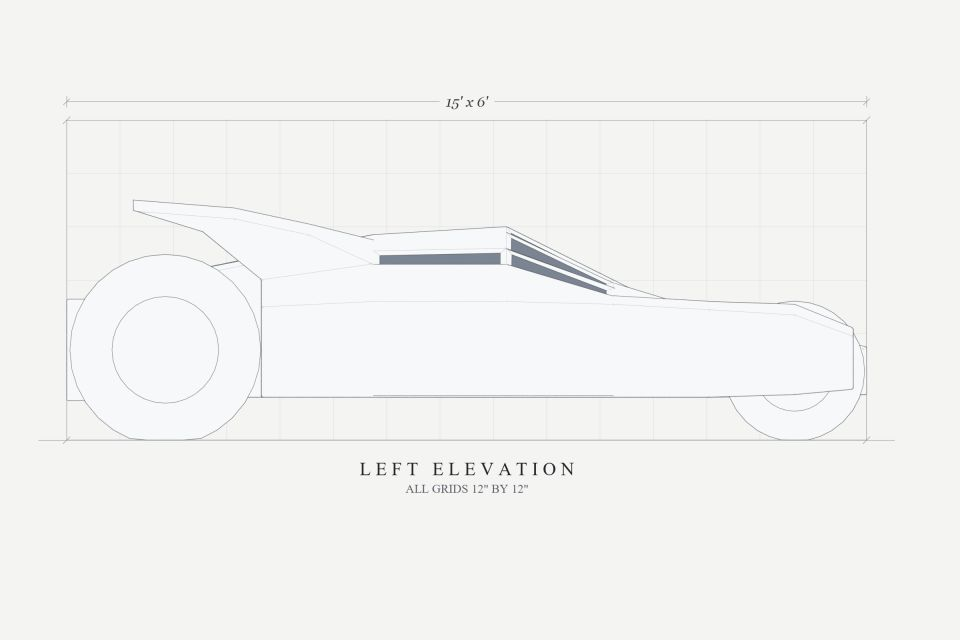
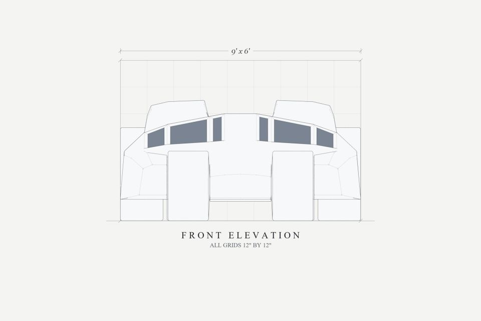
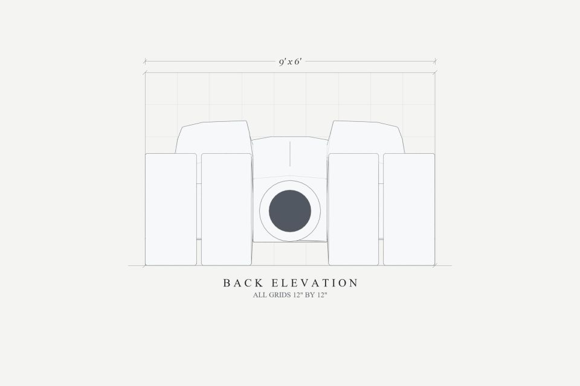
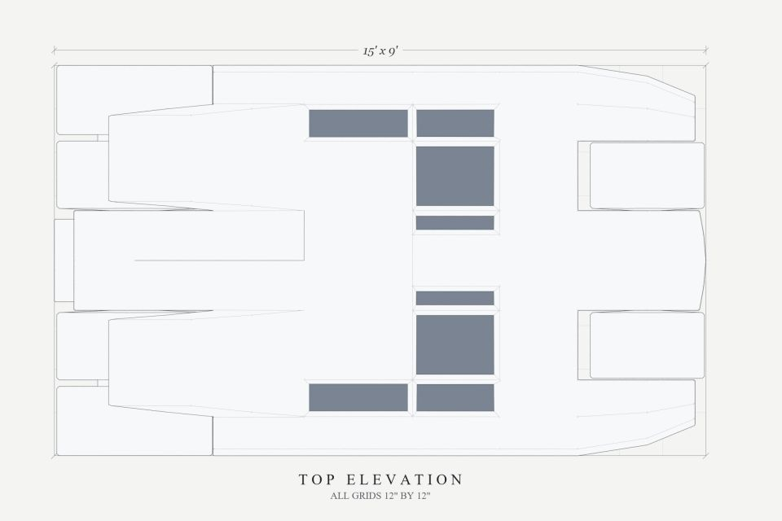
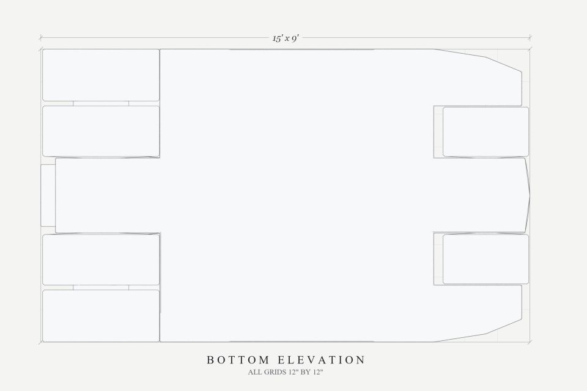
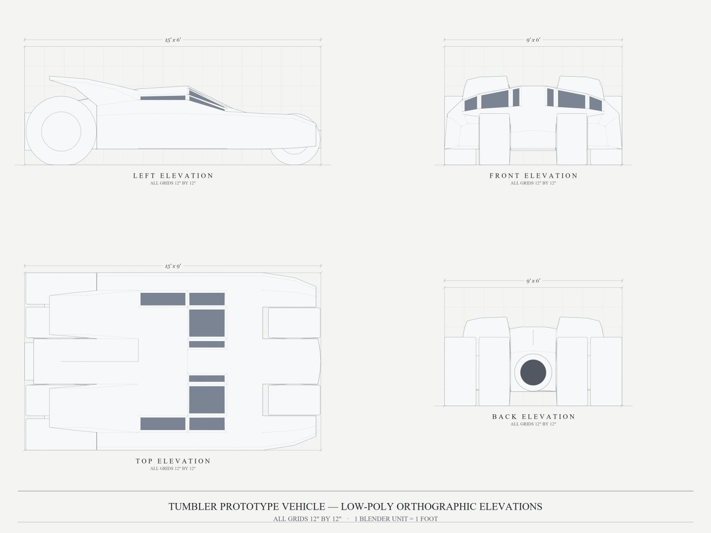
Read the views together. A line that is a station in one view shows up in the others at the same distance from the centre: the windshield base is 2.5 ft in front of the origin in the side elevation and in the top elevation alike. That cross-check is what blueprints are for. Each grid square is one foot, so you can read most sizes straight off the sheet by counting squares.
| Drawing | Use it for |
|---|---|
| Left elevation | Length stations (Y), roof and belly heights, axle heights, the fins' profile |
| Front elevation | Width stations (X), the fender arms, tire widths, the windshield |
| Top elevation | Where the canopy panes, spine and fins sit |
| Back and bottom | Checks: nozzle size, dual-tire gap, flat belly |
- Set the units first (Step 2, item 2), so the drawings load at true size in feet.
- Hover over the 3D view and press Numpad 1 (Front view). Add › Image › Reference and pick blueprint_front.jpg. In the Sidebar set Location (0, 12, 2.25).
- In the image's Object Data tab (the image-empty icon): Size 18 ft (the sheet's width), Opacity 0.5, Depth Back, and under Show In untick Perspective, so the drawing only appears in its own straight view.
- Ctrl+Numpad 3 (Left view): add blueprint_side.jpg the same way, Location (12, 0, 2.25). Numpad 7 (Top view): add blueprint_top.jpg, Location (0, 0, −0.5), Rotation Z −90° so its nose matches the side view.
- Check the fit: in each view the drawing's grid lines should land on Blender's 1-ft grid, and the ground line on Z 0. Then put the three images in a
Blueprintscollection and turn off its camera icon so they never render. Keep the back and bottom elevations open in an image viewer for checking.
Step 2 · Units, the box and the materials
- New General file. Delete the default cube, camera and light. Save as projects/04-warmobile/warmobile.blend.
- Scene tab › Units: Unit System Imperial, Unit Scale 0.3048, Length Feet. Now 1 Blender unit is 1 foot, matching the blueprint, and you can type blueprint numbers directly.
- Orientation for the whole project: the nose points to −Y, the exhaust to +Y, Z is up. The origin sits on the ground halfway between the axles (front axle Y −5.90, rear axle Y +5.90, an 11.8 ft wheelbase).
- Add › Mesh › Cube. In the Sidebar set Dimensions 9 × 8.4 × 3.2 and Location (0, −0.1, 2.4), then Ctrl+A › All Transforms. The box now spans X −4.5…4.5, Y −4.3…4.1 and Z 0.8…4.0: the core of the hull, with its belly 0.8 ft off the ground. Name it
Tumbler_LowPoly. - Material tab: add five slots with +, in this order, each a Principled BSDF with the values below. New faces take the material of the face they grow from, so slot 0 (armour) ends up everywhere unless you assign otherwise.
- For each material, also open Viewport Display at the bottom of the Material tab and set Color, Metallic and Roughness to the same values. That's the colour Solid mode shows when its Color is set to Material, so the slots read correctly in both Solid and Material Preview.
| Slot | Material | Base Color | Metallic | Roughness | Used on |
|---|---|---|---|---|---|
| 0 | Mat_Armor_Black | (0.07, 0.07, 0.08) | 0.25 | 0.80 | hull, nose, arms, spine, fins |
| 1 | Mat_Canopy_Glass | (0.02, 0.05, 0.08) | 0.85 | 0.12 | 8 recessed canopy panes |
| 2 | Mat_Tire_Rubber | (0.025, 0.025, 0.025) | 0 | 0.95 | tire treads and sidewalls |
| 3 | Mat_Jet_Exhaust | (0.24, 0.26, 0.29) | 0.90 | 0.30 | nozzle shroud, lip and bore |
| 4 | Mat_Mech_Gunmetal | (0.15, 0.16, 0.18) | 0.80 | 0.45 | wheel rims, inner hub discs, dual-tire spacer |
Step 3 · Cut the box at the blueprint stations
A blueprint gives you stations: the exact X, Y and Z lines where something changes. Cut the box along each one, so that later every part starts on a real edge. The tool is Bisect: in Edit Mode select the faces to cut, choose Mesh › Bisect, drag any line, then type the exact plane in the Adjust Last Operation panel (Plane Point and Plane Normal).
| Cut | Plane normal | Plane points | Select first |
|---|---|---|---|
| Side stations | (1, 0, 0) | X = 0, ±1.15, ±2.75, ±3.60 | everything (A) |
| Length stations | (0, 1, 0) | Y = −2.50, −0.50, +2.00 | everything |
| Roof spine edges | (1, 0, 0) | X = ±0.60 | only the roof faces in front of Y +2.0 |
Step 4 · Extrude the nose, fender arms and thruster housing
Instead of cutting holes for the wheel bays, grow the parts around the bays. Face select (3), select the front or back faces listed, press E, type the distance and press Enter. Extruding a face region moves it along its own normal, so a positive number always goes outward.
| Part | Select | Extrude | Then |
|---|---|---|---|
| Nose | front faces with |X| ≤ 1.15 | E 1.6 (to Y −5.90) | E 1.35 (to Y −7.25) |
| Fender arms | front faces with |X| ≥ 2.75, both sides | E 1.6 (to Y −5.90) | E 1.1 (to Y −7.00) |
| Thruster housing | back faces with |X| ≤ 1.15 | E 1.8 (to Y +5.90) | E 1.4 (to Y +7.30) |
Step 5 · Shape the stealth hull
Now move points, not faces. Turn on X symmetry first: in Edit Mode, the butterfly icon at the top right of the viewport header, toggle X. Any point you move on one side moves its twin on the other side, with no Mirror modifier. Select a point (or a column of points in Front or Side view with B) and type its height in the Sidebar's Vertex field (Median Z when several are selected).
Roof heights (Z, in feet) at each station. Columns are the distance from the centre line:
| Station Y | |X| 0 | 0.6 | 1.15 | 2.75 | 3.6 | 4.5 | What it is |
|---|---|---|---|---|---|---|---|
| −7.25 / −7.00 | 1.75 | 1.72 | 1.65 | 2.10 | 2.10 | 1.95 | nose tip / arm spear tips |
| −5.90 | 1.95 | 1.93 | 1.88 | 2.45 | 2.55 | 2.35 | front axle |
| −4.30 | 2.10 | 2.10 | 2.10 | 2.40 | 2.60 | 2.45 | glacis base |
| −2.50 | 3.00 | 3.00 | 2.95 | 2.85 | 2.70 | 2.55 | windshield base |
| −0.50 | 4.00 | 4.00 | 3.90 | 3.60 | 3.30 | 2.60 | canopy peak |
| +2.00 | 3.85 | 3.85 | 3.75 | 3.55 | 3.30 | 2.60 | cabin rear bulkhead |
| +4.10 | 3.45 | – | 3.35 | 3.20 | 3.00 | 2.50 | engine deck |
| +5.90 / +7.30 | 3.08 / 2.80 | – | 2.98 / 2.70 | – | – | – | housing slopes to the exhaust |
- Belly: everything stays at Z 0.80 except the nose (0.83 at −5.9, 0.85 at the tip), the arms (0.85, then 0.95 at the tips) and the rear lip of the housing (0.72).
- Spear tips: the arms' outer edge narrows from |X| 4.5 to 4.25 at Y −5.9 and 3.8 at the tip. The middle line goes 3.6 → 3.5 → 3.3. The inner wall stays straight at 2.75 so it never touches the tire.
- Nose wedge: at the tip, the centre points sit at Y −7.25, the 0.6 points at −7.20 and the 1.15 corners at −7.10, so the nose comes to a blunt point.
- Shoulder armour: move every top point at |X| 4.5 inward by 0.15 (to 4.35), so the side armour leans in.
- The raised 0.6-wide dorsal spine comes from columns 0 and 0.6 having the same height, with 1.15 a little lower.
Step 6 · Axle lines on the nose and housing
Select only the nose faces and Bisect at Plane Point Z 1.29, normal (0, 0, 1), the front axle height. Then select only the housing faces and Bisect at Z 1.69, the rear axle and nozzle height. Each bay wall is now a 2 × 2 patch of faces whose middle point sits exactly on the axle.
Step 7 · Six octagonal tires
Every wheel starts on a bay wall (the side of the nose or housing at |X| 1.15) and is extruded outward in steps. One tire, step by step:
- Hub: select the 2 × 2 patch on the wall around the axle and press I (inset, thickness about 0.10). The selected patch now has 8 points around its centre point.
- Make it round: select those 8 points and press Shift+Alt+S (To Sphere), factor 1, to turn them into a circle. For exact numbers, type each point's position: an octagon point sits at (±0.924 r, ±0.383 r) or (±0.383 r, ±0.924 r) from the centre (Y and Z for wheels), using the radius from the table below.
- Grow the tire: with the patch selected, press E, move to the next |X| and scale the ring (S) to the next radius. Repeat for each row of the table. When a step stays at the same |X| (an "in place" row), press E and then right-click to cancel the move, so you only scale. That makes a flat ring on the side of the tire.
- Ground contact: on each full-size ring, set the two lowest points to Z 0, so the tire sits flat on the floor.
- Select all the faces you just made and press Assign on the Mat_Tire_Rubber slot.
- Wheel metal: now pick out the mechanical parts and assign Mat_Mech_Gunmetal to them. These are the recessed rim faces in the middle of each outer sidewall (the last row of the table), the inner hub disc on the bay wall side (the first step out from the hub), and on the rear tires the narrow axle neck between the twin tires (step 4). Treads and the flat sidewall rings stay rubber.
| Tire | Step | to |X| | radius | Makes |
|---|---|---|---|---|
| Front (centre Y −5.90, Z 1.29) | hub | 1.15 | 0.35 | axle hub on the nose wall |
| 1 | 1.20 | 1.3125 | inner sidewall | |
| 2 | 2.72 | 1.3125 | tread (8 flat faces) | |
| 3 | 2.64 | 0.75 | outer sidewall and recessed rim | |
| Rear dual (centre Y +5.90, Z 1.69) | hub | 1.15 | 0.60 | axle hub on the housing wall |
| 1 | 1.20 | 1.79 | inner tire, inner sidewall | |
| 2 | 2.75 | 1.79 | inner tire tread | |
| 3 | 2.75 (in place) | 0.85 | inner tire, outer sidewall | |
| 4 | 2.90 | 0.85 | narrow axle neck: the gap between the twin tires | |
| 5 | 2.90 (in place) | 1.79 | outer tire, inner sidewall | |
| 6 | 4.50 | 1.79 | outer tire tread | |
| 7 | 4.42 | 1.00 | outer sidewall and recessed rim |
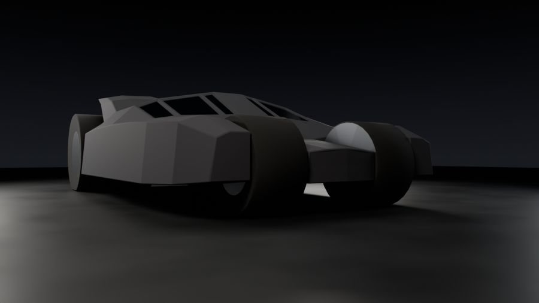
Step 8 · The jet nozzle
The back of the housing (Y 7.30) is also a 2 × 2 patch, centred at X 0, Z 1.69. Inset it (I, about 0.06), make the 8 points an octagon of radius 0.95 in the X–Z plane, then extrude:
| Step | to Y | radius | Makes |
|---|---|---|---|
| 1 | 7.75 | 0.95 | shroud, sticking 0.45 out of the back |
| 2 | 7.75 (in place) | 0.65 | lip ring |
| 3 | 6.80 | 0.65 | deep bore, recessed 0.95 back into the housing |
Assign Mat_Jet_Exhaust to all of these faces. Extruding inward in step 3 is how you make a hole in a watertight mesh: the bore is a pocket, not a gap.
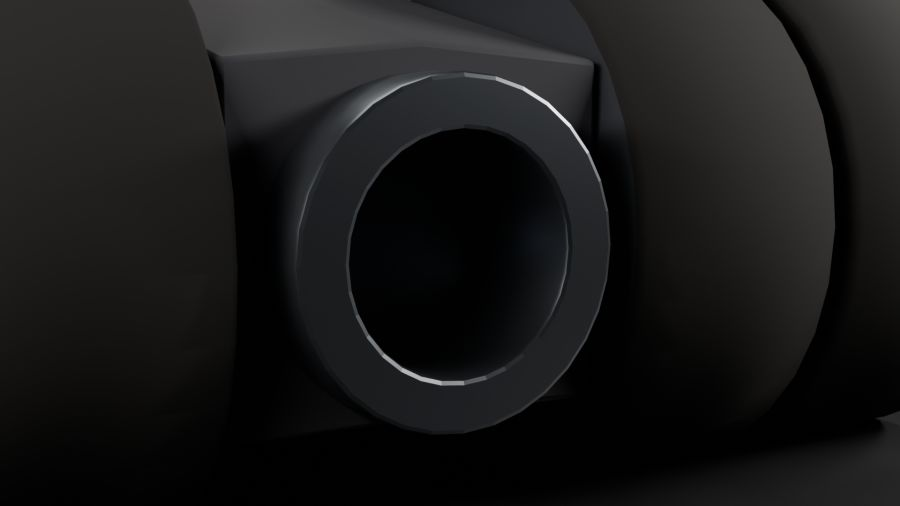
Step 9 · Twin spoiler fins
Select the 4 roof faces on the engine deck (Y +2.0 to +4.1, |X| 1.15 to 3.6, both sides) and extrude twice. After each E, place the new points:
| Step | Front edge Y | Back edge Y | Z front (|X| 1.15 / 2.75 / 3.6) | Z back | new |X| |
|---|---|---|---|---|---|
| 1 | 3.20 | 5.20 | 4.05 / 4.00 / 3.85 | 4.10 / 4.05 / 3.90 | 1.25 / 2.75 / 3.50 |
| 2 | 4.60 | 6.50 | 4.35 / 4.30 / 4.15 | 4.50 / 4.45 / 4.30 | 1.35 / 2.70 / 3.35 |
Each extrusion is a stepped blade leaning back, peaking at Z 4.5 over the rear tires (which stay below Z 3.5, so nothing touches).
Step 10 · Recessed canopy glass
- Select the 8 canopy faces: the windshields (|X| 0.6–2.75, Y −2.5 to −0.5, four faces) and the side windows (|X| 2.75–3.6, Y −2.5 to +2.0, four faces). The strip between |X| −0.6 and 0.6 stays armour: it's the windshield divider and spine.
- Press I twice for Inset Individual (each face on its own). In Adjust Last Operation: Thickness 0.12, Depth −0.06. A negative depth pushes the glass in, so the frames stand proud.
- With the glass faces still selected, click the Mat_Canopy_Glass slot and press Assign.
Step 11 · Finish and check like a game artist
- Select all, Shift+N (Recalculate Outside) so every face points out.
- Object Mode › right-click › Shade Flat. Back in Edit Mode, select all edges, Ctrl+E › Mark Sharp.
- Polycount: Viewport Overlays (the two-circles dropdown) › Statistics. The face count should be between 250 and 500.
- Watertight: Edit Mode, deselect all, Select › Select All by Trait › Non Manifold. Nothing should be selected. If something is, those edges are holes, internal faces or overlaps.
- One island: deselect all, click any one point and press Ctrl+L (Select Linked). The whole vehicle should light up.
- Size: in Object Mode the Sidebar's Dimensions should read 9′ × 15′ × 4′ 6″.
- Materials: in Edit Mode, deselect all, click each slot in the Material tab and press Select. Each one should light up only its own parts, and no face should be left on a slot you didn't mean. Switch the viewport to Material Preview (Z › Material Preview), or to Solid with Color set to Material and Cavity on, and orbit around to check.
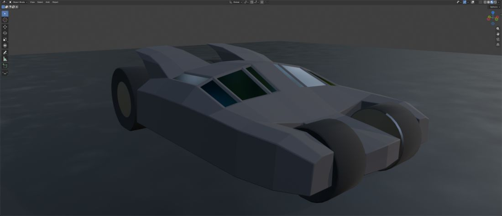
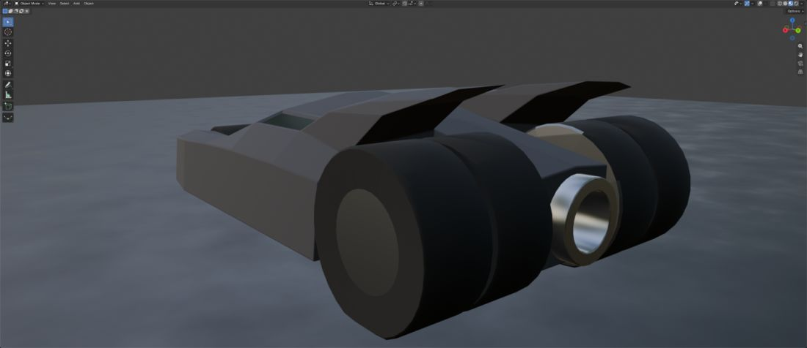
Step 12 · Refine: round tires and nozzle, bevel the armour
The blueprint model is done, so now it gets the close-up details: round tires instead of octagons, a round turbine nozzle, and a thin rounded fillet along the armour edges so they catch highlights. All of it happens on the same mesh. Nothing is rebuilt.
- Back it up first. Object Mode, select the vehicle, Shift+D then right-click (a copy in place). Rename the copy
Tumbler_LowPoly_Backup, M › New Collection "Tumbler Backup", and turn off its eye and camera icons. If anything below goes wrong, delete the original and unhide this one. - Select the tire rings. Edit Mode, edge select (2). Alt+click one edge running around a tire to select that whole ring, and Shift+Alt+click to add the others: every ring on all six tires, including the rim rings, but not the small hub ring where the tire meets the hull wall (|X| 1.15). Leaving that one 8-sided keeps the cuts from running across the flat body panels. Add the four nozzle rings too: the base on the housing, both lip rings and the bore end.
- Subdivide: right-click › Subdivide, Number of Cuts 3. Each of the 8 sides becomes 4, so every ring now has 32 points. They still lie on the old flat octagon sides.
- Make each ring a true circle. Select one ring (Alt+click), set the Pivot Point to Bounding Box Center and press Shift+Alt+S (To Sphere), factor 1. Then scale it (S, locked to the ring's plane: Shift+X for tires, Shift+Y for the nozzle) until the ring passes through its old corner points. The octagon's corners were already on the true radius (1.3125 front, 1.79 rear, 0.95 and 0.65 on the nozzle); the new points between them sat inside it, down to 0.924 of it. Do this ring by ring.
- Ground contact: on every full-size tire ring, select the bottom points that went below the floor and type Z 0 in the Sidebar. That flattens a small contact patch: 2 points per front ring, 4 per rear ring.
- Tire shoulders: select the rings where the tread meets a sidewall (both sides of every tire) and press Ctrl+B: Width 0.05, Segments 1. A thin chamfer makes the tires read as moulded rubber instead of sharp-edged coins. Then, with the new chamfer faces still selected, click the Mat_Tire_Rubber slot and press Assign. A bevel copies the material of a face next to it, so on the inner edge, where the tread meets the gunmetal hub disc, part of the chamfer comes out as metal. That shows up as a thin bright ring hugging each tire.
- Nozzle lip: select the two rings at the very back of the nozzle (Y 7.75, radius 0.95 and 0.65) and bevel them: Width 0.03, Segments 2.
- Armour fillets: select the edges between two armour faces that fold by about 22° to 145° and are longer than 0.25 ft. Skip any edge that touches a tire, the nozzle, the wheel metal or a glass pane. A quick way: Select › Select Sharp Edges (Sharpness 22°), then deselect around the tires, nozzle and canopy panes. Bevel with Width 0.03, Segments 2, Shape 0.5 and Clamp Overlap on.
Smooth and flat shading
- Select the tire treads and shoulders, the nozzle's shroud, bore and lip roll, the rear spacer cylinders and the new armour fillet strips, then Face › Shade Smooth. Leave the armour panels, glass, flat tire sidewalls and rim discs flat.
- Select the edges where a smooth area meets a flat one (tread to sidewall, around the rims, the nozzle lip, both borders of each fillet strip) and Ctrl+E › Mark Sharp. Smooth shading then blends only within each curved surface and never leaks a gradient into a flat panel.
Step 13 · Studio, lights and cameras
The same kind of studio as the other projects: a dark gradient world (the court's sky recipe, Part 2 Step 5), a floor, three-point area lighting with a top disk, and cameras with focus empties. Put them in Studio, Studio Lights and Render Cameras › Camera Focus Targets collections, and move the vehicle into a Tumbler collection.
- World: Texture Coordinate (Generated) › Separate XYZ (Z) › Color Ramp from (0.035, 0.037, 0.045) at 0 to (0.003, 0.003, 0.004) at 0.35 › Background, Strength 1.
- Floor
Studio_Floor: a 120 × 120 ft plane at Z 0. Material: Noise (Object coordinates, Scale 0.35, Detail 6) mixes (0.018, 0.019, 0.021) and (0.032, 0.033, 0.036) into Base Color, and the same noise through Map Range (0.3–0.7 → 0.42–0.58) into Roughness: dark, slightly uneven polished concrete.
| Light | Shape · size | Power | Color | Location | Aimed at |
|---|---|---|---|---|---|
| Key_Softbox | Rectangle 6 × 4 | 2000 W | (1.0, 0.93, 0.84) | (−11, −13, 10) | (0, −0.5, 1.6) |
| Fill_Panel | Square 6 | 450 W | (0.9, 0.95, 1.0) | (13, −8, 5) | (0, 0, 1.6) |
| Rim_Strip_Left | Rectangle 10 × 1.5 | 2400 W | (1.0, 0.97, 0.92) | (−11, 11, 6.5) | (0, 1, 2) |
| Rim_Strip_Right | Rectangle 10 × 1.5 | 2100 W | (1.0, 0.97, 0.92) | (11, 10, 6.5) | (0, 1, 2) |
| Top_Disk | Disk 10 | 900 W | (1.0, 0.98, 0.95) | (0, 0.5, 15) | straight down |
| Camera | Location | Focus empty at | Lens | F-stop |
|---|---|---|---|---|
| Cam_01_Front_Left_34 | (−13.5, −17.5, 6.0) | (0, −0.5, 1.7) | 40 | 8 |
| Cam_02_Rear_Right_34 | (13.0, 18.0, 6.0) | (0, 1.0, 1.9) | 40 | 8 |
| Cam_03_Side_Profile | (−26.0, 0.25, 2.4) | (0, 0.25, 2.0) | 50 | 11 |
| Cam_04_Front_Low_Hero | (−8.0, −16.0, 1.5) | (0, −3.5, 1.7) | 30 | 5.6 |
| Cam_05_Rear_Exhaust | (3.6, 13.8, 2.6) | (0, 7.6, 1.69) | 55 | 2.8 |
| Cam_06_Top_Iso | (−9.0, −10.0, 20.0) | (0, 0.25, 1.5) | 40 | 11 |
Each camera points at its focus empty: give the camera a Track To constraint targeting the empty, or place it and use Ctrl+Alt+Numpad 0. All cameras have Depth of Field on, Clip Start 0.1, Clip End 300.
Step 14 · Render
- Render tab: Cycles, GPU. Noise Threshold 0.015, Max Samples 192, Denoise on, Max Bounces Total 12. Color Management: AgX, Punchy, Exposure 0.
- Output: 1920 × 1080, PNG. Render each camera (Ctrl+Numpad 0, F12) and save it into 04-warmobile/renders/ with the camera's name. Before re-rendering after a change, move the old set into a version folder (here renders/v1_four_material_palette/ holds the first renders, renders/v2_five_material_palette/ the five-material renders from before Step 12, and renders/v3_round_tires_bevels/ the first refined renders, from before the mesh was snapped to exact mirror symmetry), the same way the other projects keep their earlier versions.
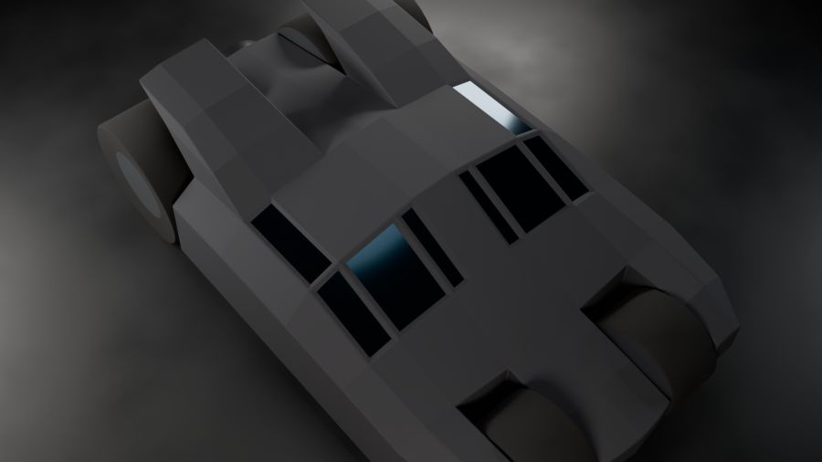
Check your result
- One object, and Select Linked selects all of it. Select Non Manifold selects nothing.
- Statistics shows 1942 faces on the refined model; the hidden backup still has 438.
- Two front tires sit in the bays; two pairs of rear tires have a visible groove between them.
- The nozzle has a dark bore you can look into, and the canopy glass sits below its frames.
- The tires and nozzle are round and smooth-shaded; the armour panels stay flat, with thin bevelled edges catching the rim lights.